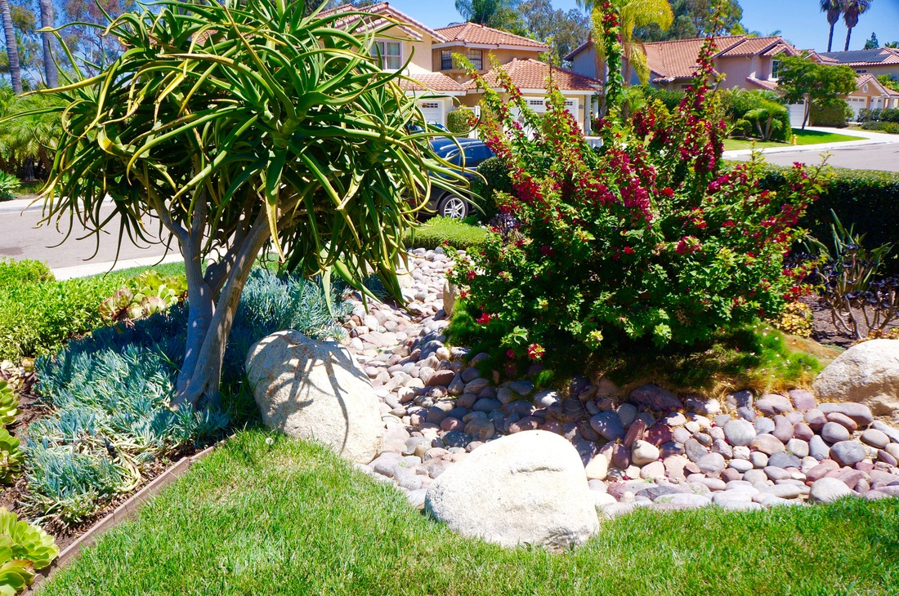

landscape design in Cardiff-by-the-Sea by Arcadian Landscape" width="1600" height="900" fetchpriority="high">Cardiff-by-the-Sea Landscaping Services
Your Neighbors in Cardiff -- Landscaping from Our Home Base
Cardiff-by-the-Sea is where Arcadian Landscape lives, works, and has built its reputation over the last decade. This is our home base. We surf these breaks, eat on Restaurant Row, walk the San Elijo Lagoon trails, and run into our clients at the Cardiff Farmers Market on Sundays. When we say we know Cardiff, it is not marketing language -- it is daily life. That proximity means something for the work we do here. We are not driving 45 minutes to get to your property. We are already in the neighborhood, and that translates to faster response times, easier site visits, and a genuine understanding of how Cardiff residents want their outdoor spaces to feel.
Cardiff has a character that is distinct from every other community along the North County coast. It is less polished than Del Mar, less planned than Carmel Valley, and less buttoned-up than Rancho Santa Fe. The vibe is laid-back, creative, and community-oriented -- a surf town that happens to have some genuinely beautiful homes. The landscaping reflects that. Cardiff gardens tend to be eclectic rather than formal, mixing native plants with Mediterranean species, incorporating found objects and local stone, and prioritizing gardens that feel lived-in rather than staged. That relaxed aesthetic is not the same as low effort. It takes real design skill to create a garden that looks effortless.
The San Elijo Lagoon ecological reserve sits at the heart of Cardiff, and its presence shapes how we approach landscaping on nearby properties. Homes along Manchester Avenue, in the VR (Vacation Road) neighborhood, and backing onto the lagoon preserve need landscapes that respect the ecosystem next door. That means avoiding invasive species that could spread into the wetlands -- no pampas grass, no ice plant, no fountain grass. Instead, we design with native species that mirror the lagoon's natural plant communities: coastal sage scrub, native bunch grasses, Torrey pine understory plants, and riparian species like Western sycamore and coast live oak for properties with enough space. These gardens attract the same birds, butterflies, and pollinators you see along the lagoon trails, creating a seamless transition between your property and the preserve.
Sustainability is not a trend in Cardiff -- it is a core value for most residents we work with. Our Cardiff projects regularly incorporate composting stations built into the landscape design, worm bins tucked beside raised garden beds, rainwater capture through permeable paving and strategically placed rain gardens, and organic soil management that eliminates synthetic fertilizers. We build planting beds with compost-rich mixes inoculated with mycorrhizal fungi that support root health naturally. Integrated pest management replaces chemical sprays. The result is a garden that feeds itself, supports local ecology, and gets healthier year over year rather than depending on external inputs.
The Seaside neighborhood along the bluffs offers some of Cardiff's most dramatic ocean views, and the landscaping challenge there is different from the inland streets. Direct salt exposure, constant wind, and thin, sandy soil over sandstone demand a tough plant palette. We design Seaside properties with the most resilient coastal species available -- Carissa, Westringia, Metrosideros, and low-growing succulents like Senecio mandraliscae and Oscularia deltoides that handle direct ocean spray. Hardscape materials must be salt-rated: sealed natural stone, porcelain pavers, and marine-grade stainless steel for any metal elements. The goal is a landscape that withstands the conditions while framing the views that make Seaside properties special.
The VR neighborhood and Glen Park area on the inland side of Cardiff offer more protected growing conditions and slightly larger lots. These properties sit in a natural bowl that shelters them from the strongest coastal winds while retaining the mild temperatures that make Cardiff's climate so favorable for gardening. Many VR and Glen Park homes have mature trees -- Torrey pines, eucalyptus, Monterey cypress -- that predate the current structures. Designing around these specimens is something we do regularly: protecting root zones during construction, adjusting grade and drainage to preserve tree health, and selecting understory plantings that thrive in dappled shade beneath established canopy.
Restaurant Row along South Coast Highway 101 defines Cardiff's social center, and the homes in the surrounding blocks share that walkable, community-oriented feel. Front yards in this part of Cardiff are as much about contributing to the streetscape as they are about the individual property. We design front gardens that invite interaction -- low walls with seating, open plantings rather than fortress hedges, and pathways that feel welcoming rather than defensive. Several of our Cardiff projects have become landmarks on their blocks, drawing compliments from neighbors and setting a standard for what coastal residential landscaping can look like when it is done with care.
Landscaping Services in Cardiff-by-the-Sea
Landscape Design
Native-forward, sustainable designs tailored to Cardiff's coastal ecology and laid-back community character.
New Construction
Complete landscape installation for new builds and major renovations throughout Cardiff neighborhoods.
Hardscape
Natural stone pathways, retaining walls, and seat walls using locally-sourced and salt-rated materials.
Water Features
Rain gardens, natural-style water features, and recirculating fountains that complement Cardiff's organic aesthetic.
BBQ Islands
Outdoor kitchens and BBQ islands for Cardiff's year-round entertaining climate and community-oriented lifestyle.
Patios & Decks
Ocean-view decks, courtyard patios, and covered outdoor rooms that extend your Cardiff home outdoors.
Pavers
Permeable pavers, natural flagstone, and recycled-content materials for sustainable walkways and patios.
Landscape Lighting
Low-voltage LED lighting that highlights garden features and extends outdoor living into Cardiff evenings.
Planting
California natives, coastal sage scrub, and pollinator-friendly species that connect your garden to the lagoon ecosystem.
Irrigation
Water-smart drip systems, rain sensors, and weather-based controllers that conserve every drop.
Artificial Grass
Premium synthetic turf for play areas, pet zones, and front yards -- zero water, zero chemical inputs.
Landscape Renovation
Transform your Cardiff yard into a sustainable, native-forward garden that reflects the community's values.
Why Arcadian for Cardiff-by-the-Sea
We do not just serve Cardiff -- we live here. Arcadian Landscape is headquartered in Cardiff-by-the-Sea, and owner Evan Weisman has called this community home for years. That means we are not learning your neighborhood from a map. We know which streets flood during heavy rain, which properties get the strongest ocean winds, where the soil shifts from sandy to clay as you move inland from the coast, and which mature trees are worth designing around. Cardiff is where our reputation was built, one neighbor referral at a time.
Every Cardiff project gets Evan's personal attention from first site walk to final walkthrough. In a small town where word of mouth is everything, we cannot afford to hand off your project to subcontractors or let details slide. The garden we build for you is one your neighbors will see every day -- and many of them already know our work. That accountability is the best quality guarantee we can offer.
Cardiff-by-the-Sea Landscaping FAQ
What native plants work best for Cardiff-by-the-Sea gardens?
Cardiff's coastal location and proximity to the San Elijo Lagoon ecological reserve make it an ideal setting for native plant gardens. We recommend coastal sage scrub species like California sagebrush (Artemisia californica), black sage (Salvia mellifera), and white sage (Salvia apiana). For color, Cleveland sage (Salvia clevelandii), California fuchsia (Epilobium canum), and monkey flower (Diplacus aurantiacus) perform beautifully. Native grasses like deer grass (Muhlenbergia rigens) and purple needlegrass (Stipa pulchra) add texture and movement. These species support local pollinators, require minimal irrigation once established, and reflect the natural landscape you see along the lagoon trails.
How do you design landscapes near the San Elijo Lagoon?
Properties adjacent to or near the San Elijo Lagoon ecological reserve require special consideration. We avoid invasive species that could spread into the preserve, select native and non-invasive plantings that support the lagoon ecosystem, and design drainage to prevent fertilizer or chemical runoff from reaching the wetlands. For properties with lagoon views, we design layered plantings that frame rather than block sightlines, using low-growing natives in the foreground and taller screening only where privacy is needed from neighboring properties.
Can you create a sustainable, organic landscape in Cardiff?
Absolutely -- sustainable design is central to our approach in Cardiff. We design with organic soil amendments, compost-based planting mixes, and mycorrhizal inoculants that build soil health naturally. Integrated pest management replaces chemical treatments. Composting areas and worm bins can be integrated into the landscape design for on-site waste recycling. Rainwater capture through permeable paving, rain gardens, and French drains keeps water on your property rather than sending it to storm drains. Many of our Cardiff clients have eliminated synthetic fertilizers entirely, relying on compost tea and organic mulch to feed their gardens.
Ready to Transform Your Cardiff Garden?
We are right here in Cardiff-by-the-Sea. Contact your neighbors at Arcadian Landscape for a free design consultation.